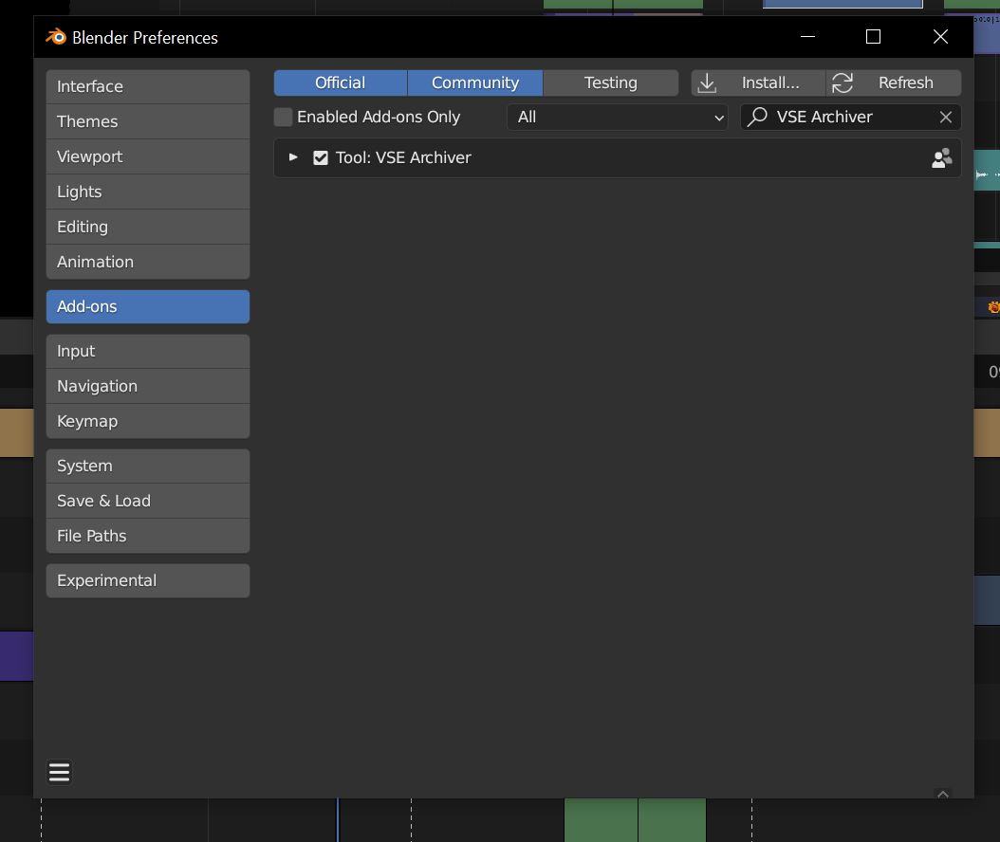
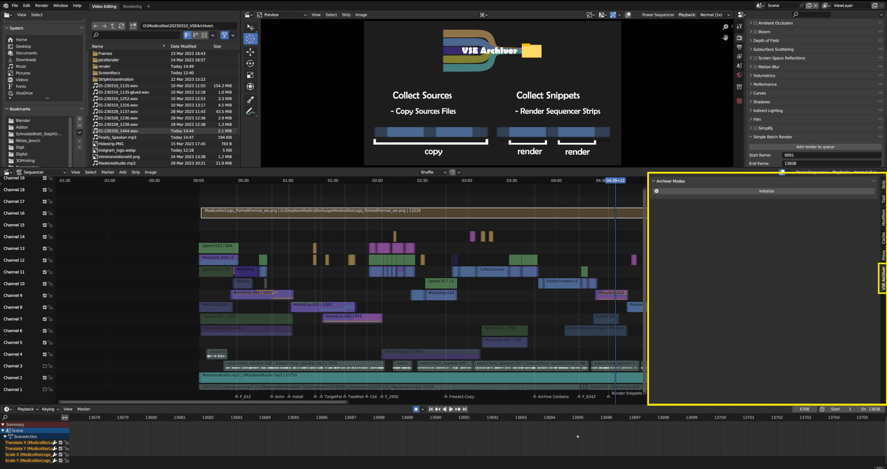
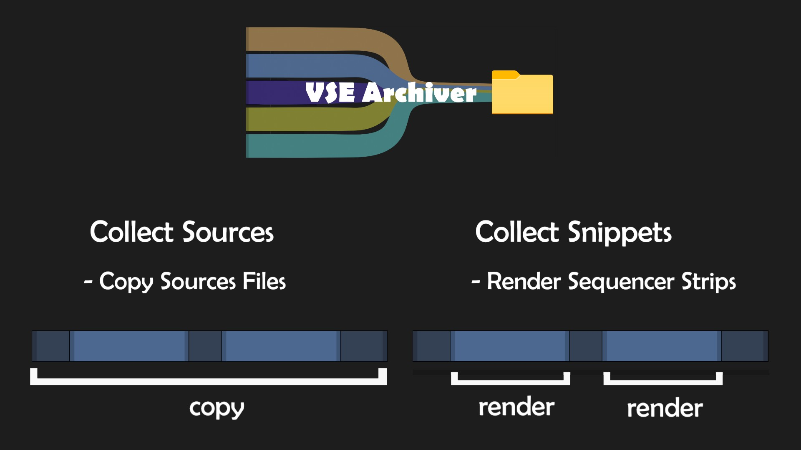
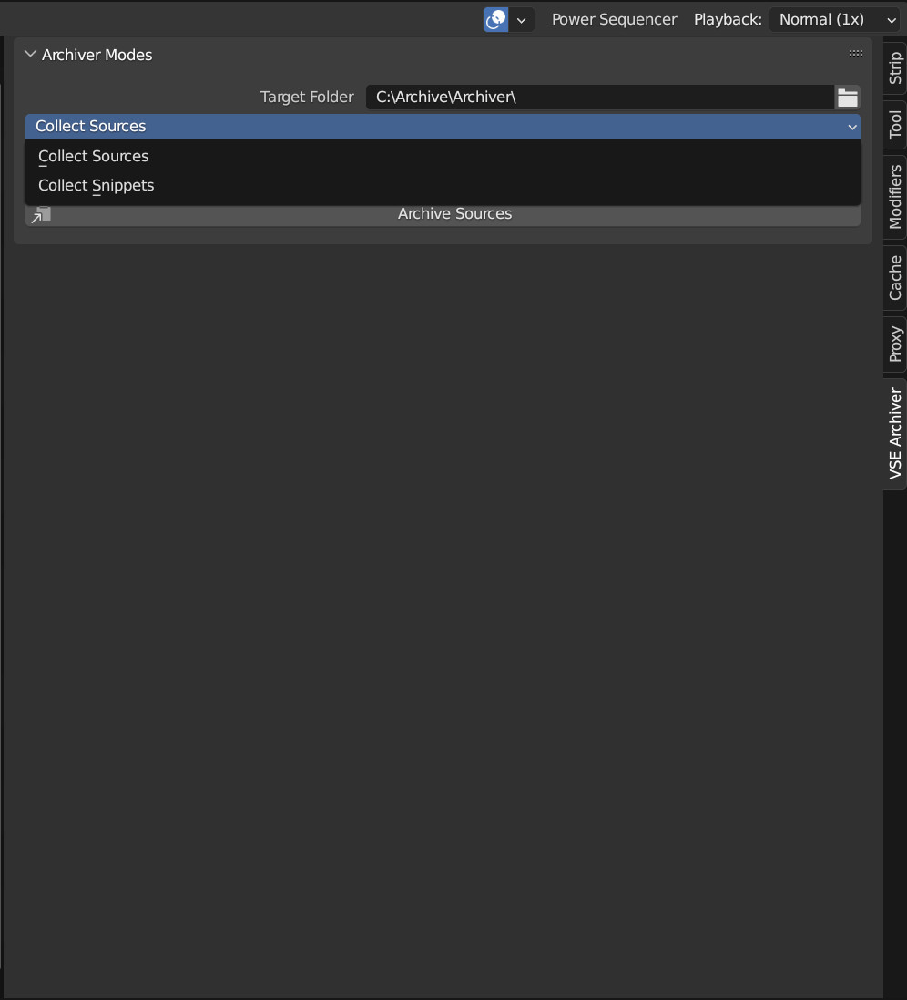
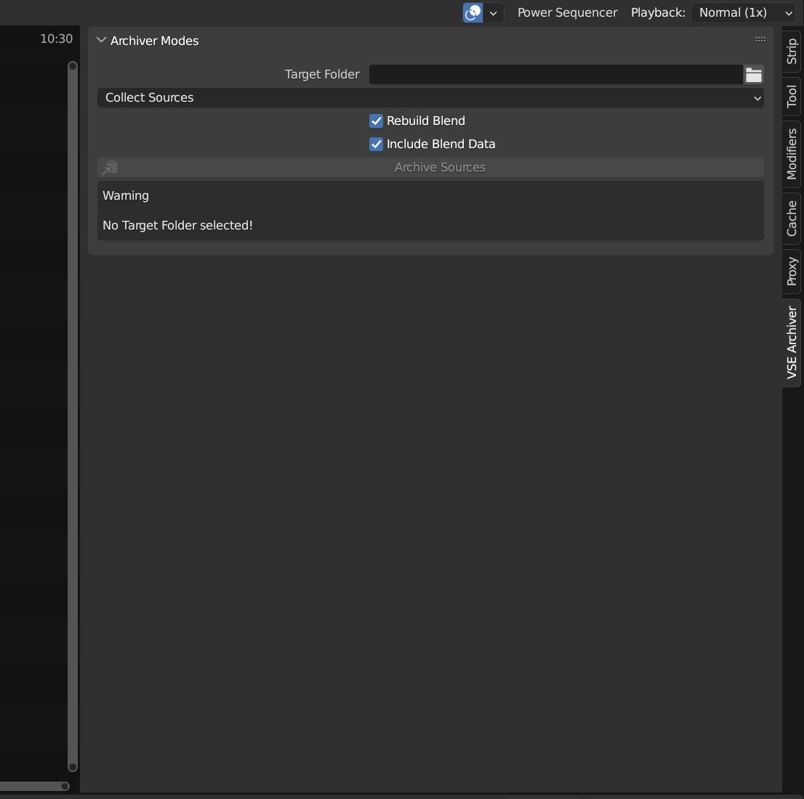
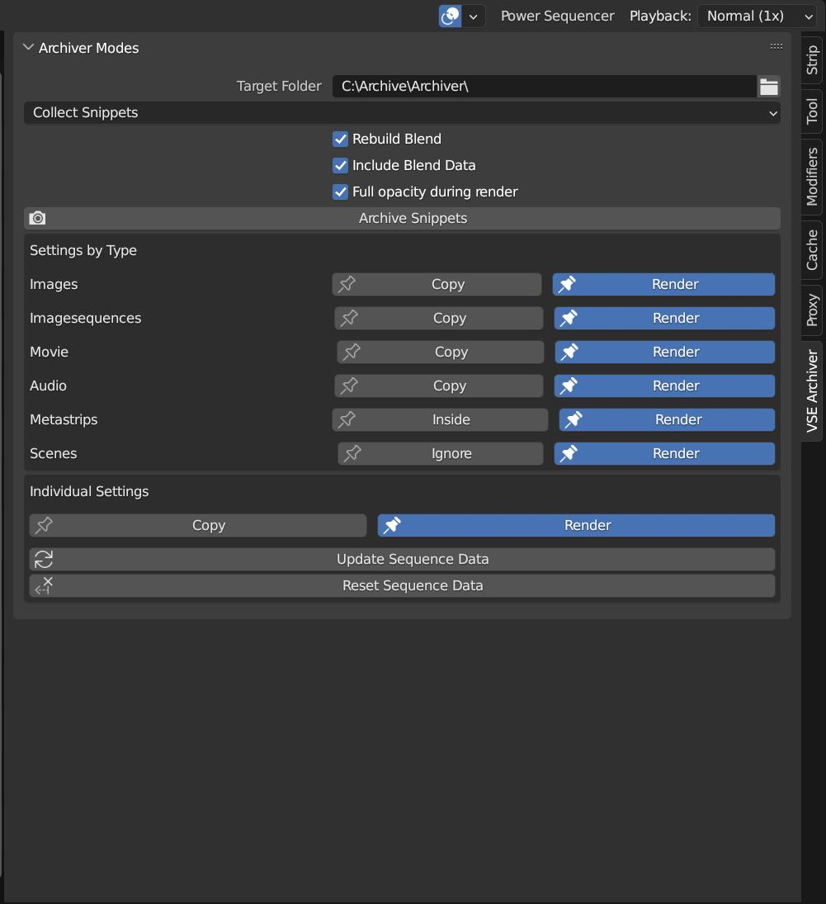
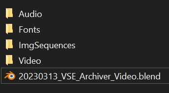

What is VSE-Archiver?
The VSE Archiver is a Blender addon that produces a back-up of your video project. It will collect all the footage used in your videoproject into a distinct folder structure and relinks all sequence strips in the now archived blend file to the archive folder.
This results in a handy back-up folder which includes only the media used consolidated into an ordered folder structure ready to be archived or send to a customer demanding the project files.
- Footage distributed over your system will end up in a clean folder structure.
- Project size will be decreased because only the used footage will be collected
- Decide whether you want to copy the source footage or render the indiviudal strips
- Footage includes Images, Imagesequences, Video, Audio and Fonts which will be found either used in vse strips or mentioned in the blend data
Install

In Blender open the "Edit"-dropdown menu. Choose "Preferences...". In the side bar click on Add-ons. Click on "Install..." at the top of the window.
Locate the "vse-archiver_3-4_V0.zip" on your computer and double click or click "Install Addon" in the bottom of the window. Check the check box next to "VSE Archiver".
In order to have the "VSE Archiver" loaded on default with Blender click "Save User Settings" under the hamburger menu in the left bottom corner and exit User Preferences.
Where to find the addon controlls?

The "VSE Archiver" Panel will now appear in the right side panel (n-panel) of the Sequence Editor.
Typical Process

- Find the Addon in the VSE toolbar (n-menu, to the right)
- Initialize the addon by clicking the initialize Button
- Specify a Target Folder where all the footage will be collected to.
- Choose if you either want to collect the source files (simple copy of all source files to the new Archiv folder structure) or collect the snippets (renders the individual sequences into the new Archiv folder structure)
- Adjust settings if you want something special
- Click "Archiv Sources" or "Archiv Snippets", respectively
- The addon will now go through all scenes of the blend file and either copy all sourcefiles used in the VSE or render all sequence strips ("Collect Snippets" allows a mixed mode)
- Addon saves the blend file into the target folder
- Relinks all the sequences and Blend data footage to the new location in the archive folder.
- Makes the paths relative
- Blender awakes in the new Archive file
- The project is ready to be archived or sent to the customer
Main Modes

The VSE Archiver offers two different approaches of archiving your footage:
- Collect Sources: Copies the original source media
- Collect Snippets: (primarily) Renders sequence strips and saves them in the Archive Folder. However, copy or render can be decided either per media type or per strip
Collect Sources

This mode is used to archive all original source files by copying them into the archive folder and relinking them. Imagine a case where you filmed 10 hours, but only used 3 min of the material.
There will be a lot of unused material. Use this option to get an archive with only the used footage and get rid of the shaky shots you didn't dare to delete, but eventually never used.
Pro
- If a source file is used in several sequencer strips it is only copied once
- No quality lost due to rendering
- Effect strips stay untouched and adjustable
Contra
- If only small portions of very long video files are used a lot more data than necessary is archived
Options
- Rebuild Blend File: when this is checked the active blend file will be saved into the archive and all footage is relinked. When unchecked only the source material is copied into the archive without the blend file.
- Include Blend Data: Blender sometimes saves links related to media in the blend data of the blend file. When checked the addon will look for Images, Imagesequences, Video, Audio and Fonts and save them in the archive. Important for example when: 1 . you do compositor stuff (colorgrading, stabilizing footage, vfx) in another scene 2. You used another font than the blender default 3. You use the scene strip of 3D scene with image textures...
Collect Snippets

The Collect Snippets mode is primarily designed to render individual strips into video files. However, you can decide per type or for the individual sequence whether you want it to be rendered or the source files copied.
For example in most cases it does not make sense to render a video from a single image. The source should be copied instead. An image sequence might be more handy to be archived as video file. Individual setting overwrites the type setting.
Options
- Include Blend Data:(see above)
- Rebuild Blendfile:(see above)
- Full Opacity during Render: When this checkbox is activated the addon will remove the alpha fade of the sequencer strips for rendering and add them back to the newly rendered and replaced strip. Generally, all alpha keyframes will be removed and applied back, not only fades.
Settings by Type
- Image, Imagesequence, Movie, Audio: decide whether sequences of that type are rendered or the source files are copied.
- Metastrips: can be rendered as one strip or the inside is processed as individual strips
- Scene strips: can be rendered or ignored
Individual Settings
When you select a sequence (active sequence) you can set copy or render (or for scene or meta strips as mentioned in settings by type) for this specific sequence. When you change a type setting all sequences of that type will have their individual settings changed to the new setting. Previously set individual settings are getting lost for this type. BTW, in the end the individual settings for each strip decides how they are processed.
- Update Sequence Data: The addon collects information about the sequences when initialized. When you add or remove sequences, this data needs to be updated by clicking this button. An information text will appear in the warning section, when this is necessary
- Reset Sequence Data: Resets all individual strip settings to the settings defined by type
Warning panel

The warning section will appear when the addon detects a Problem. For example the target folder is not set. Or problems with the output format.
The addon will use the output render settings set in the scene you start the archiving process from. When its set to PNG or other Imageformats this could amount to huge data sets cluttering your hard drive.
Therefore you are explicitly asked to approve that you want images by checking the "Render as Image anyway" checkbox. Also be aware that audio rendering is not available for rendering images and even video formats like AVI RAW and JPEG. That is why the addon will recommend using Ffmpeg.
Folder Structure of the Archive

Besides the Archived blendfile, the target folder can contain several folders namely
- Audio,
- Fonts,
- ImgSequences and
- Video
Random Details:
- Transparency is not available in all (most?) videoformats. Therefore, rendering sequences that need transparency with Collect Snippets will produce a black background and the alpha is lost. Set these strips to "Copy".
- Audio strips will be rendered as video file due to blenders (or mine?) inability to render mp3, wav or similar audio files. The addon will show a warning when the render format is not supporting audio.
- Rendered movie strips (Collect Snippets) will be without audio. This can only be avoided by packaging both together in a metastrip to get the video file with its audio
- The addon will not delete files. However, the addon will overwrite all files in its way (same path and file names). Thus, we strongly recommend using an empty folder as new archive destination. We are not responsible for any data lost.
- Render settings will be used as defined in the active scene where the archive process was started. However, different color management, postprocessing, in different scenes will not be homogenised. Tell me if you really need that
- All sequences will be rendered independent of the intially set frame range. However, strips in negative frame range are not rendered.